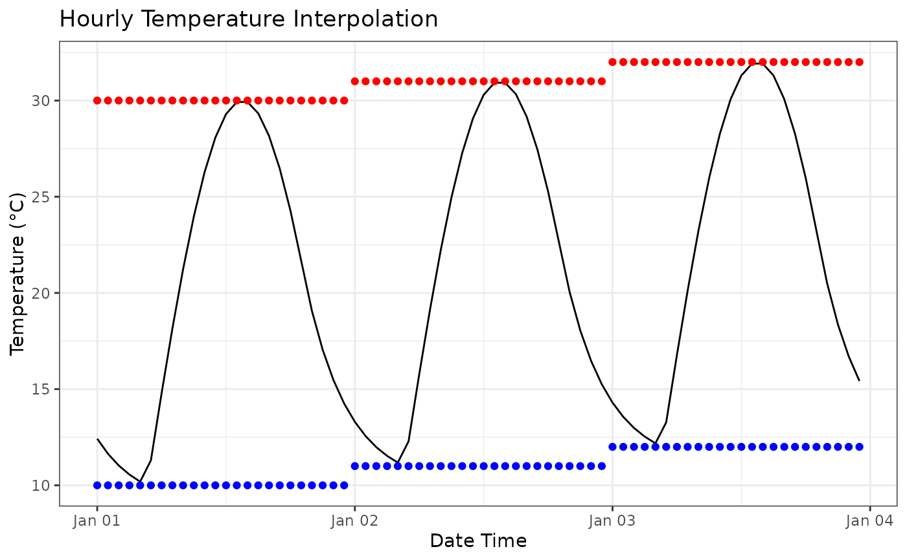

Interpolate Hourly Temperature Values using APSIM HourlySinPpAdjusted.
Source:R/thermal_time.R
interpolate_hourly_sin_pp_adjusted.RdInterpolates hourly temperatures from daily minimum and maximum temperatures
using the APSIM HourlySinPpAdjusted method. Daytime temperatures are
sinusoidal and nighttime temperatures follow an exponential cooling curve.
Day length, sunrise and sunset are calculated from latitude and date.
Arguments
- mint
A numeric vector of daily minimum temperatures.
- maxt
A numeric vector of daily maximum temperatures.
- date
A
Datevector with the same length asmint, used to determine the day of year for day length calculations.- latitude
Latitude of the site (deg) as a single numeric value.
- hourly
A logical value indicating whether to return hourly temperatures. If
FALSE, daily mean temperatures are returned.
Value
A numeric vector of daily mean temperatures, with one value per
input day if hourly = FALSE. If hourly = TRUE, a data frame
is returned with columns date, mint, maxt, hour, and temp.
Examples
mint <- c(10, 11, 12)
maxt <- c(30, 31, 32)
date <- as.Date(c("2020-01-01", "2020-01-02", "2020-01-03"))
interpolate_hourly_sin_pp_adjusted(mint, maxt, date = date, latitude = -27.5)
#> [1] 20.18884 21.17367 22.00730
hourly <- interpolate_hourly_sin_pp_adjusted(
mint,
maxt,
date = date,
latitude = -27.5,
hourly = TRUE
)
library(ggplot2)
hourly |>
ggplot(aes(x = timestamp, y = temp)) +
geom_line() +
geom_point(aes(x = timestamp, y = mint), color = "blue") +
geom_point(aes(x = timestamp, y = maxt), color = "red") +
theme_bw() +
labs(
x = "Date Time",
y = "Temperature (°C)",
title = "Hourly Temperature Interpolation"
)
